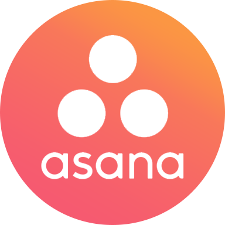

experience
-
i've worked & consulted for fortune 500 companies, primarily in data, engineering, and management solutions
-

Engineering Intern
may 2019 - august 2019
-
Brand Partnerships/Marketing Campaigns Manager
january 2019 - may 2019
• Worked closely with VSCO's brand partnerships team and CMO to help create brand partnerships and
marketing campaigns for 30 different potential company integrations/partnerships that align with VSCO's brand ethos
• Conducted UX research and sentiment research on brand ideation, creating marketing and mockups of
potential integrations between different company partnerships, which VSCO has planned to push forward with
• Lead team of over 5 consultants to work on creating multiple campaigns/mock-ups over the course of 2 quarters, -

Product Manager/Data Scientist Intern
january 2019 - may 2019
• Analyzed daily supply chain data to help facilitate and create models for Tesla’s supply chain development across the world,
specifically in growing markets to conduct analysis; brought three functional statistical models to production
• Created models specifically in time series analysis, forecasting, and clustering customer segmentation of different user markets
across the world to help inform product and engineering teams on supply chain needs
• Developed full-stack application incorporating proprietary K-Means model to estimate potential throughput of planned service centers and
its effect on units in operation in a selected region; resulted in saving months of planning time -

Project Manager
august 2018 - january 2019
• Lead team of six consultants in collaboration with Head of User Education at Asana for the Fall 2018 Semester.
• Conducted data analysis on review data using machine learning clustering algorithms to evaluate User Education
Resources effectiveness for New Users, and attribution analysis of User Education Experience to positive UX.
• Conducted aspect analysis on User Review Data with key words to effectively target pros & cons of 2000+ reviews.
• Evaluated pain points of product from UI/UX standpoint by developing KPI's/metrics to track over time for NU.
• Conducted NUX research interviews to identify & create data-driven mock-ups of feature implementations -

data engineering intern
june 2018 - august 2018
• Utilized Python, Scala/Java, SQL, NoSQL to engineer data pipelines to helping artists and fans connect over the world
• Worked closely with and interviewed artists about features to help produce relevant metrics; helping artists book venues/shows,
organize tours, and market their merchandise/ticket-sales in-app to their biggest fans
• Engineered a Peak SuperFan Score feature, tracking dates of highest streaming scores between every artist and user on the platform
(accounts for 2+ million artists, 83+ million users every day, billions of streams daily) -
data analytics consultant
january 2018 - may 2018
• Researching and maintaining processes for data collection and maintenance for Google Education Project
• Engineered web-crawler and web-scraper to create, and self-maintain database for 2000 colleges in the USA
• Studied data collection processes and optimized KPIs and research metrics and engineered an optimal data
collection and analytics method for Google Education -

strategy consultant
january 2017 - may 2017
-
strategy consultant
september 2017 - present
-

software engineering intern
june 2017 - august 2017
• Full-stack web development utilizing Python, JavaScript, DjangoDB backend, JSON, Angular, CSS and HTML5
• Redesigned and incorporated 8 new features into the reporting application of the Sighten Management platform
• Revamped solar panel installation by 30% (14,639 to date) by creating installation management platform in Angular
helping 60+ installers generate financial reports for their leads, increasing efficiency and speed of lead conversion
• Integrated Celery to create asynchronous solar report generation to allow installers to create multiple reports for leads -

director / co-founder
feb 2008 - present
-
student software developer for ai
february 2017 - present